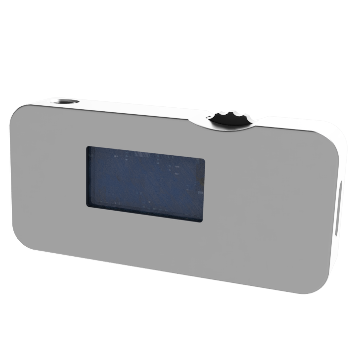

modusignal 在线串口
通过浏览器连接本地串口设备，把设备驱动、调试收发和曲线查看放在一个在线工具里。
当前架构
页面
设备注册表
设备驱动
Web Serial
曲线/日志
每个设备可以拥有自己的页面 UI，同时通过统一的 profile、命令构造和遥测解析接口接入。
AOMaster 页面
面向 4-20mA / 0-10V 模拟量信号发生器。当前协议未定，页面先提供输出框架、串口调试和曲线查看。

设备输出
当前选择 AOMaster；协议未定时，参数先记录在页面状态，可通过下方手动命令发送。
mA
驱动命令预览
等待协议定义
自定义设备页面
用于没有内置驱动的设备：配置设定范围、发送模板和回包解析规则。
发送模板
支持 {value}、{value:2}、{unit}、{mode}回包解析
解析结果会进入曲线查看曲线查看
自动尝试从接收文本中提取数值；协议确定后可切换为设备字段。
串口收发
支持 ASCII 与 HEX，适合在设备协议确认前做调试。
新增设备请求
提交新设备前，请尽量准备协议、串口参数、典型命令、回包样例和期望页面 UI。